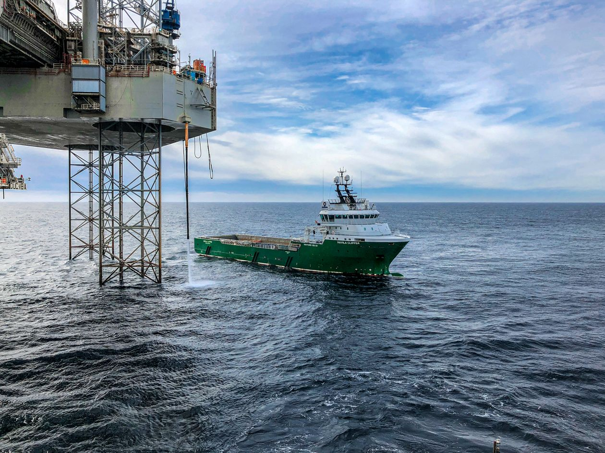

Fourteen kilometres inside one weather window
- Asset
- Product pipeline, Irish Sea
- Depth
- 86 m
- Spread
- Work-class ROV
- Duration
- 3.5 days on task
The brief
A full inspection of a 14.2 km product pipeline — riser base, two crossings, CP survey throughout — before the winter season, for an operator whose integrity case depended on it. The forecast gave one weather window of about four days, then a front that would close the field for a week.
Decisions
The plan front-loaded everything that could not be re-done cheaply: the riser base, both crossings and the section with historically low CP readings went first, in dives one and two, while the weather was guaranteed. The long, straight, low-risk spans were left to the end, where a shortened dive would lose the least. Eventing was logged live on the vessel, so any gap would be known — and re-flown — the same day, not discovered in the report phase.
Outcome
All 14.2 km inspected in 3.5 days. The front arrived on day four with the vehicle already recovered and the data already QC’d. The report was accepted by the operator’s integrity team as submitted — no re-run requests, no supplementary dives. The sequencing, not the weather luck, is the repeatable part: critical spans first is now the standing rule on every plan I write.

“Ewan front-loaded the critical spans while the weather held and had the vehicle recovered before the front arrived — the full 14.2 km, evented live, with no re-runs asked for afterwards. Our integrity team accepted the report as submitted. That has not happened with the previous two contractors.”